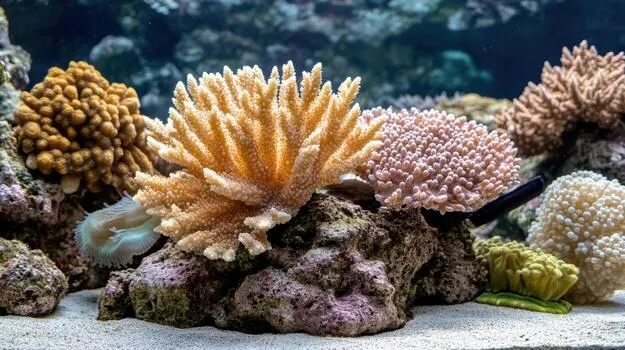

Procesos del proyecto
El objetivo principal de este proyecto es estudiar e identificar posibles microorganismos asociados a corales del litoral mediterráneo mediante herramientas de biología molecular y bioinformática.

Formación y preparación previa
Durante la primera fase del proyecto se proporcionó formación básica e intermedia a los integrantes del grupo Dualiza sobre los conceptos de biología y bioinformática necesarios para comprender el desarrollo de la investigación.
Esta preparación inicial fue especialmente importante por dos motivos:
- La necesidad de adquirir conocimientos biológicos que permitieran comprender las muestras y los procedimientos utilizados durante la investigación.
- La ausencia de información previa suficiente sobre los microorganismos estudiados, lo que hacía necesario obtener y analizar datos biológicos antes de poder avanzar en su identificación.
Esta etapa permitió establecer una base común de conocimientos para que los participantes pudieran comprender las diferentes fases del proyecto y colaborar en su desarrollo.
Obtención y estudio de las muestras
Durante el mes de abril, Juan Antonio García López, profesor responsable de la investigación, y Luis Flores, alumno participante del grupo Dualiza, realizaron un viaje al Museo de Historia Natural de Viena (NHM), donde se encontraban conservadas diferentes muestras biológicas de interés para el proyecto.
A lo largo de esta estancia, los representantes del proyecto pudieron conocer parte de las colecciones científicas del museo, algunas de ellas formadas por ejemplares con más de un siglo de antigüedad. También tuvieron la oportunidad de aprender sobre los procedimientos de conservación, preparación y estudio de las muestras.
Paralelamente, se preparó el entorno informático de trabajo mediante la configuración de servidores dedicados y una conexión VPN segura basada en WireGuard. Esta infraestructura permitió disponer de un entorno remoto desde el que desarrollar las tareas de procesamiento bioinformático.
Control de calidad y procesamiento de ADN
Una vez disponibles los datos de secuenciación, se comenzó con una fase de control de calidad de las lecturas crudas de ADN, identificadas como R1 y R2. Para ello se utilizó FastQC, una herramienta que genera informes sobre diferentes características de las secuencias.
Estos informes permitieron evaluar aspectos como la calidad por base, la distribución del contenido GC y la posible presencia de adaptadores o secuencias de baja calidad. De esta manera, fue posible conocer el estado inicial de los datos y determinar qué necesidades de filtrado presentaban.
Posteriormente, se compararon dos herramientas de filtrado y limpieza de lecturas: BBDuk y fastp. Tras evaluar sus resultados, el equipo se decantó por BBDuk para continuar con el procesamiento de las muestras.
Para facilitar el trabajo con diferentes muestras, se desarrollaron scripts en Bash que permitieron automatizar el procesamiento de los lotes de ADN, identificados desde DNA_001 hasta DNA_008.
Entre los parámetros utilizados se encontraban maq=28, relacionado con la calidad media mínima de las lecturas, y minlen=100, que establecía una longitud mínima de 100 bases para conservar las secuencias.
Procesamiento de las muestras de ARN
Las muestras de ARN requirieron un procedimiento diferente al de las muestras de ADN. En este caso, uno de los objetivos era reducir la presencia de ARN ribosómico (ARNr), que podía representar una parte importante de las lecturas obtenidas y dificultar el análisis centrado en otros tipos de ARN, como el ARN mensajero.
Para realizar este filtrado se utilizó SortMeRNA junto con la base de datos SILVA, que permite identificar secuencias de ARN ribosómico mediante su comparación con secuencias de referencia.
Durante este procedimiento aparecieron dificultades relacionadas con el elevado consumo de memoria RAM. Para poder continuar, se dividieron las muestras en archivos más pequeños, de manera que pudieran procesarse por separado y reducir la carga de trabajo del servidor.
Esta experiencia permitió comprender la importancia de adaptar los procedimientos bioinformáticos a los recursos disponibles y de planificar adecuadamente el procesamiento de grandes cantidades de datos.
Reconstrucción y análisis de secuencias
Debido a las limitaciones de almacenamiento de los primeros servidores, fue necesario trasladar las muestras ya filtradas mediante SCP a un servidor de mayor capacidad de procesamiento, denominado SuperDualiza.
Una vez transferidos los datos, se comenzó a trabajar en la reconstrucción de secuencias sin utilizar un genoma de referencia previo. Este procedimiento se conoce como ensamblaje de novo.
Para llevar a cabo esta fase se probaron diferentes herramientas de ensamblaje, entre ellas SPAdes y Velvet, que utilizan grafos de de Bruijn para reconstruir secuencias a partir de fragmentos de ADN.
También se evaluaron diferentes valores de K-mers, un parámetro que influye en la construcción de estos grafos y en el resultado del ensamblaje.
Esta fase permitió avanzar desde las lecturas obtenidas mediante secuenciación hasta su reconstrucción en fragmentos más largos, que posteriormente pueden estudiarse e interpretarse.